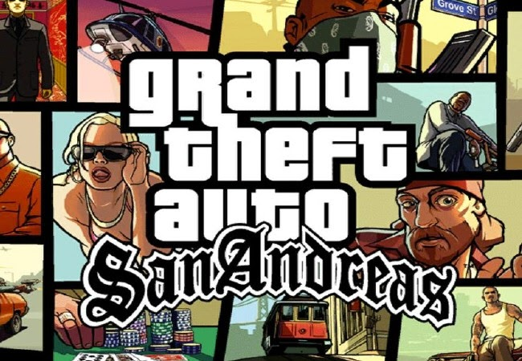
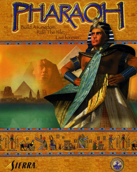
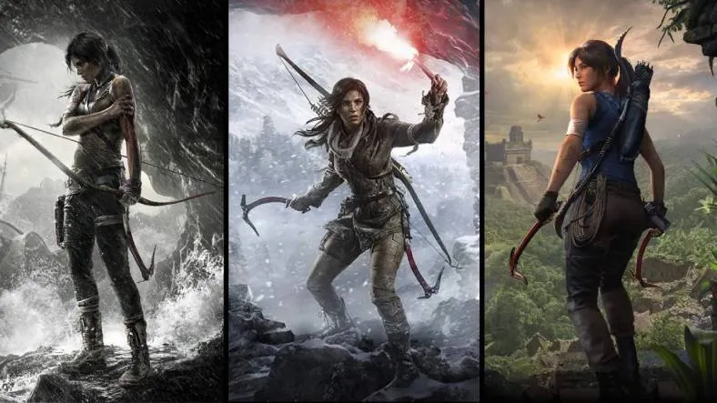

Nobody can stop us gamers to play what we want to play! Even it is a 80s or 90s pc game, as long as we are enjoying it and having a good time! Let me share to you some of my games I play when I got the spare time!
 Geralt of Rivia is the Man!
Geralt of Rivia is the Man!
The best RPG game I played period. The soundtrack alone can mesmerize you while you are in the game, Roach and I spent a lot of hours AFK'ing in the mountains of Skellige while listening to the beautiful ambient and enjoying the view of the region.
I finished the game and all its DLC, collected all the gwent cards, now I am lonely. No more quests to ponder just exploring the wilderness and enjoying the scenery. Any Team Yennefer there?
 All you have to do is to follow the train!
It was year 2009, I played this not so classic GTA game. The story strucked me in a good way, a lot of gang banging, drive by to our sworn enemies. Deal there, deal that and I finished the whole story quests. A fitting ending for our CJ! Great soundtracks and it introduced me to Gangsta Rap music and some classic songs in 80s and 90s.
 What a classic! Build homes and pyramids!
Year 2000, I started playing this City building simulator game. Pharoah.. What a cool name! It piqued my interest on the history of Egyptians and its engineering. The game thought me to be to patient and I just fast forwarded the speed to x8 to make my progress faster! *laughs*
My greatest achievement was completing this big pyramid! It took me a week to build it inside the game. As the materials will be mined and be cut to blocks and the blocks will be pushed by the laborers from bottom to the top. Such a tedious work back in those ancient times!
 Angelina Jolie is the best Lara!
I am fan of the Tomb Raider series game! Completed the three (3) games! What an adventurous ride! A lot of jump scares! trap evading scenes! Sneaky beaky moments! Puzzle and riddle solving! Took me alot of time to finish but Youtube videos helped me a lot when I am really desperate for answers!
Thats all my notable games! There's a lot of games I want to play but time doesnt slow down like in the Max Payne games. But with that reality check, let me leave you small message.
Play the games that makes you happy, games that makes you smile and scream with joy and excitement. As time goes by, you will remember them not just by the game's name but what did the game did to you.
Images by Wikipedia · Deviantart